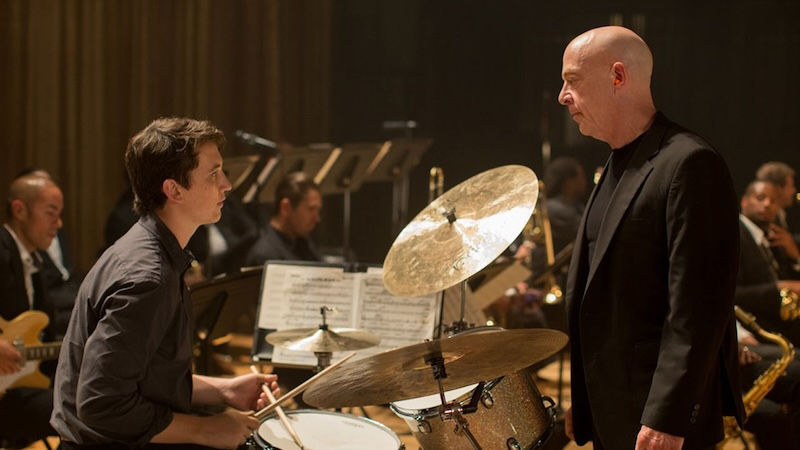
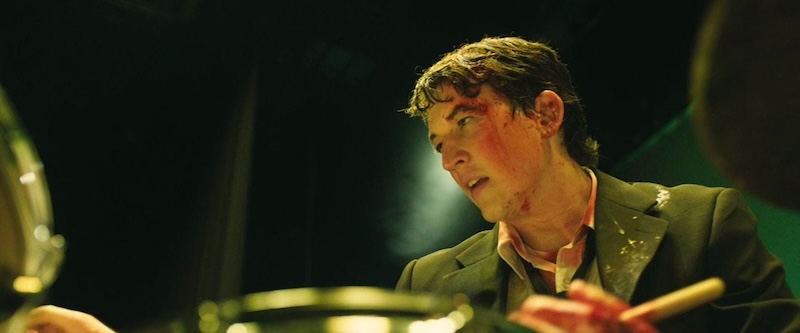

Damien Chazelle's Whiplash is one of my personal favorite movies of all time. Released in 2014, it remains one of the best depictions of an artist's obsession with his craft taken to the absolute extreme. The film's premise can be summarized by the familiar thought experiment "How far are you willing to go for greatness?". Its titular character, Andrew Nieman, and his abusive professor, Terence Fletcher, both act out the conviction that there is no length you should be unwilling to go to reach perfection in your craft.

Far from romanticising Nieman and Fletcher's relentless quest for perfection, the film shows the sacrifices and pain that come with structuring your entire life around a single pursuit. Fletcher's extreme methods drive Nieman to the point of exhaustion, emotional distress, and even physical injury. Nieman's own desire to be the best and to please his teacher drives him to sacrifice everything else in his life, including his relationships, to his pursuit. That said, the film also does not demonize the obsession with greatness. While Nieman and Fletcher's relationship is driven by conflict, they are also the only people who understand each other. Thus, the film remains open ended and invites the viewer to form their own opinion.

| Category | Recipient |
|---|---|
| Best Supporting Actor | J.K. Simmons |
| Best Film Editing | Tom Cross |
| Best Sound Mixing | Craig Mann, Ben Wilkins, Thomas Curley |